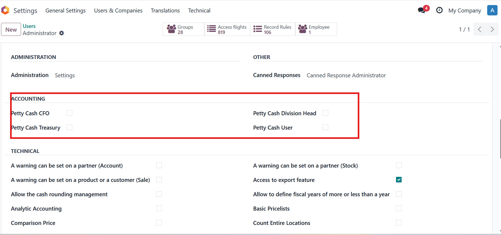
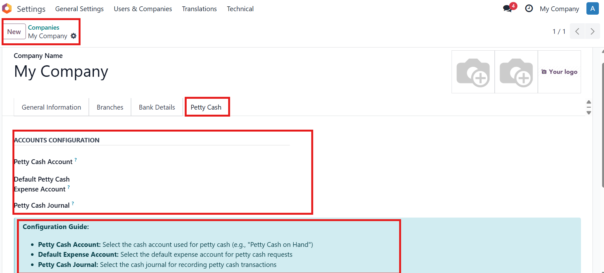
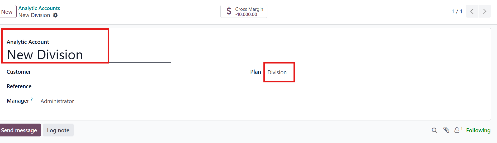
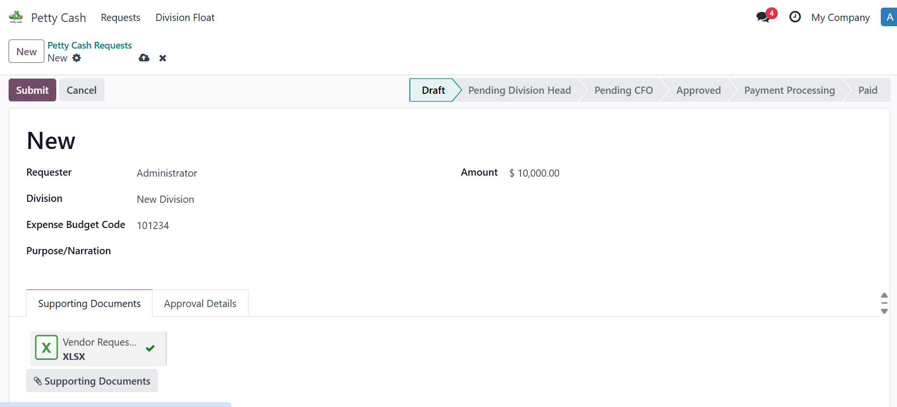
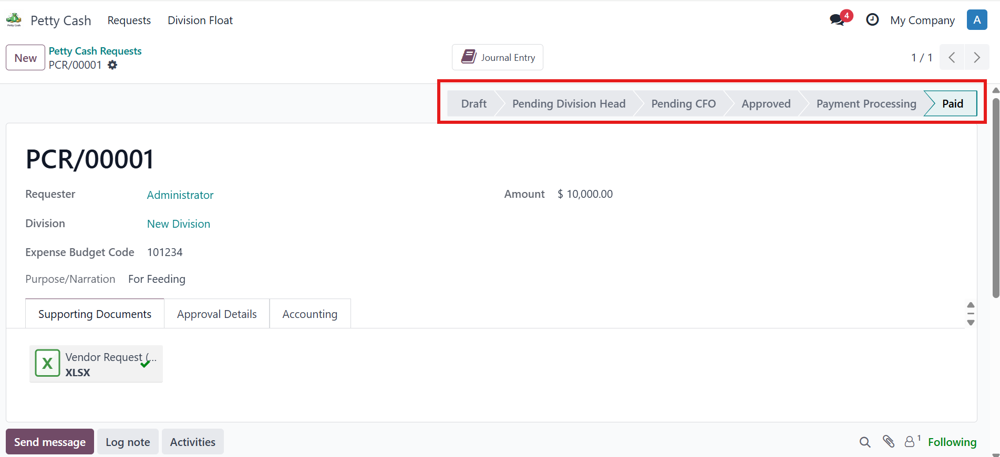
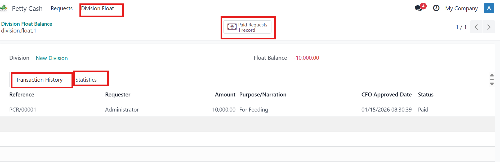
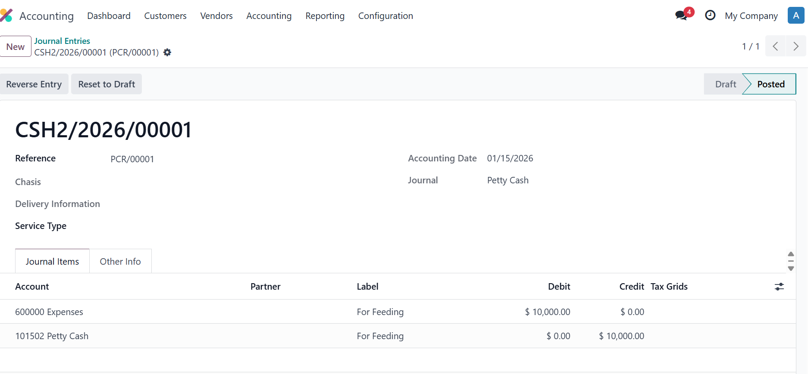
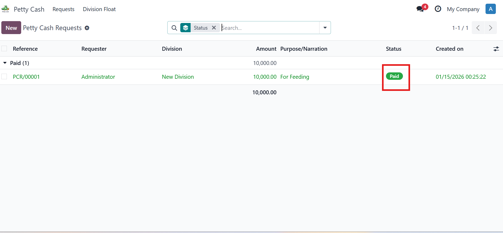

Complete Automated Workflow System for Odoo 18
Streamline your petty cash requests with automated approvals, division tracking, and seamless payment processing
Requesters can easily submit petty cash requests up to 10,000 with division details, budget codes, and supporting documents.
Intelligent routing from Division Head to CFO with automated notifications and approval tracking at each stage.
Automatic division float balance management tied to analytic accounts for precise budget control and reporting.
CFO-approved requests are automatically posted to appropriate accounts with batches created by division for seamless processing.
Role-based payment handling: Treasury Officer for amounts below 10,000, Payable Officer for amounts above 10,000.
Automatic notifications for approval/rejection status and reminder alerts for pending approver actions.
Employees submit petty cash requests through a simple form in Odoo. The system ensures all necessary information is captured before submission.
The system automatically routes the request to the Division Head for first-level approval. Email notifications and in-app alerts ensure timely review.
After Division Head approval, the CFO reviews for final authorization. Upon approval, the system automatically creates accounting entries.
The Treasury or Payable Officer processes the actual payment to the requester. The system tracks payment status and updates division float balances.

Assign users to their respective roles for the approval workflow

Set up the accounting accounts that will be used for petty cash transactions

Configure divisions and assign division heads for approval routing

Simple and intuitive form for submitting petty cash requests

Clear approval buttons and status tracking throughout the workflow

Real-time tracking of petty cash spending by division

Automatically created journal entries with complete audit trail

Treasury officers process payments and update division floats
End-to-end automation from request submission to payment processing and GL posting
Multi-level approval workflow ensures proper authorization and budget compliance
Track requests, approvals, and division float balances in real-time with instant notifications
Automatic tracking by division with analytic account integration for precise budget control
Full documentation trail from request to payment with supporting documents and GL entries
Built specifically for Odoo 18 with full integration with Accounting and HR modules
| Version | 18.0.1.0.0 |
| Category | Accounting / Finance |
| License | LGPL-3 |
| Dependencies | account, mail, analytic, base_automation |
| Author | Tech Joe |
| Website | ayanfiscoss@gmail.com |
| Support | ayanfiscoss@gmail.com |
We're here to support you!
Email: ayanfiscoss@gmail.com
Company: Tech Joe
© 2025 Tech Joe. All rights reserved.
Petty Cash Management v18.0.1.0.0